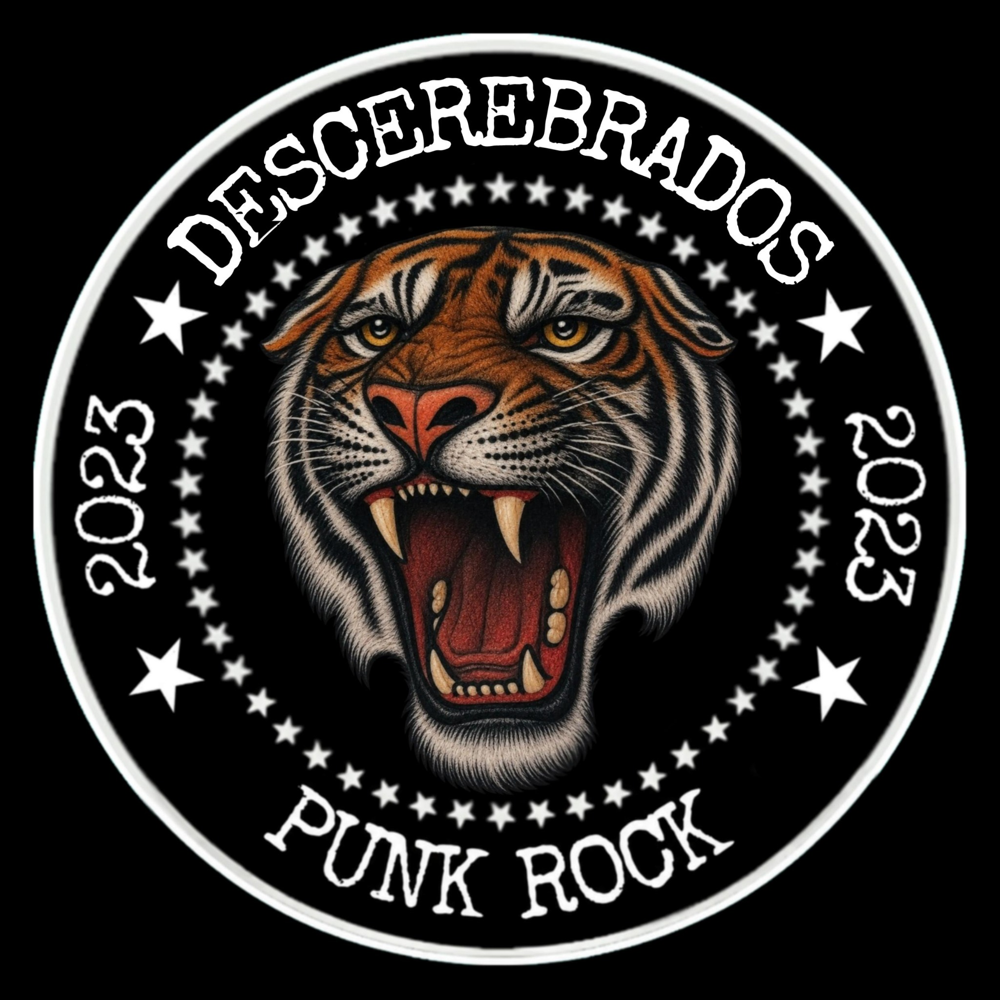

DETRÁS DEL RUIDO
NO SOMOS
UN DISFRAZ.
Somos todo eso que alguna vez no supimos decir de otra manera.
ORIGEN ✳
Todo comenzó en Puerto Deseado, Santa Cruz.
A principio del 2023 ya hacía música. En ese momento escribía con poca frecuencia; escribí varias canciones para mi novia de aquel entonces. En su mayoría eran canciones de amor, sin embargo, no fueron grabadas hasta el 2024, cuando la relación ya había culminado. Por lo tanto, las letras de dichas canciones fueron modificadas: pasaron de ser canciones de amor muy bonitas a ser prácticamente canciones de desamor.
Grabé mis primeras canciones en la casa de una banda amiga, llamada LOS RASPONES, de Puerto Deseado, Santa Cruz: dos covers, una canción de mi hermano Fede y otra canción de un loco que tuvo una banda con él, pero terminó siendo una estrellita... Así que esa canción nunca vio la luz, pero la de mi hermano Fede, sí. Lamentablemente no está en las plataformas públicas; únicamente vive en mi canal personal porque no cuenta como solista, por eso no la cuento como parte del proyecto solista.
Y así seguí, hasta que en octubre del 2023 viajé a Córdoba — Alta Gracia. Acá escribí la mayoría de mis canciones y varias letras, o partes de las letras. Algunas venían de las canciones que le escribía a mi novia en ese momento.
Cuando me separé, comencé a escribir un montón. Todo lo que escribía era para ella; la gran mayoría de mis canciones son para ella y hasta hoy en día continúo escribiéndole canciones. Pero bueno, es difícil: aún no puedo superarla. Siempre será el amor de mi vida.
MANIFIESTO ★
- No cantamos para decorar el silencio.
- No maquillamos lo que duele.
- No buscamos quedar bien: buscamos decirlo.
- Si algo arde, que arda también en la canción.
UNIVERSO CREATIVO
Las canciones habitan entre lo cotidiano y lo simbólico emocional: desamor, traición, recuerdos, desoportunidades y decisiones que nunca se tomaron.
Cada obra forma parte de un mismo estado emocional: Miradas Vacías, Un día de agosto, No aprendí a vivir sin tu amor.
No están conectadas por una trama.
Están conectadas por cicatrices.
Por aquello que todavía hace ruido.
NO SE TRATA DE TENER LA CABEZA EN SU LUGAR.
SE TRATA DE NO CALLAR
LO QUE LLEVAMOS ADENTRO.